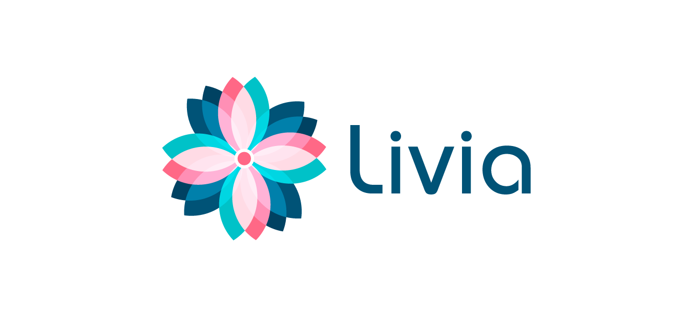
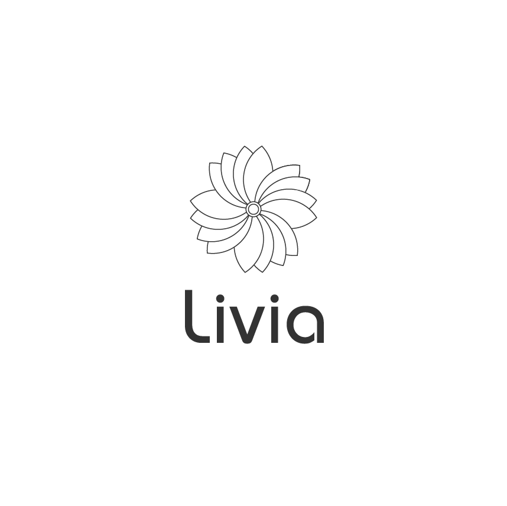
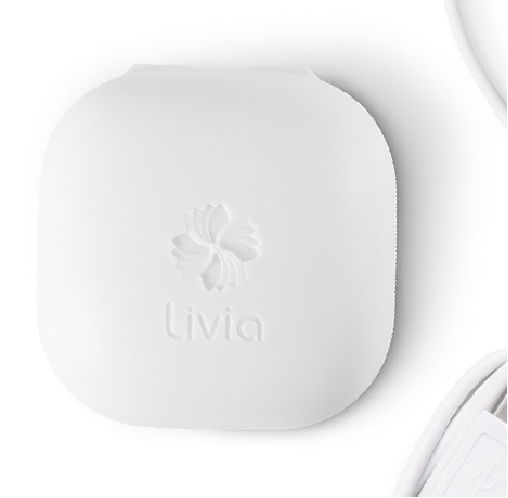
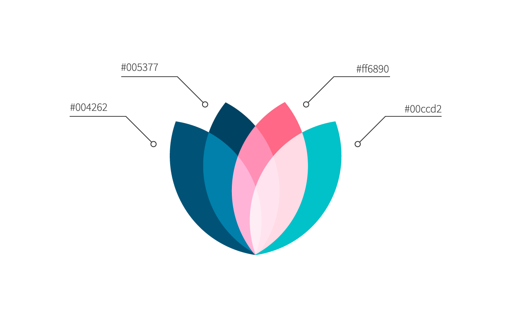
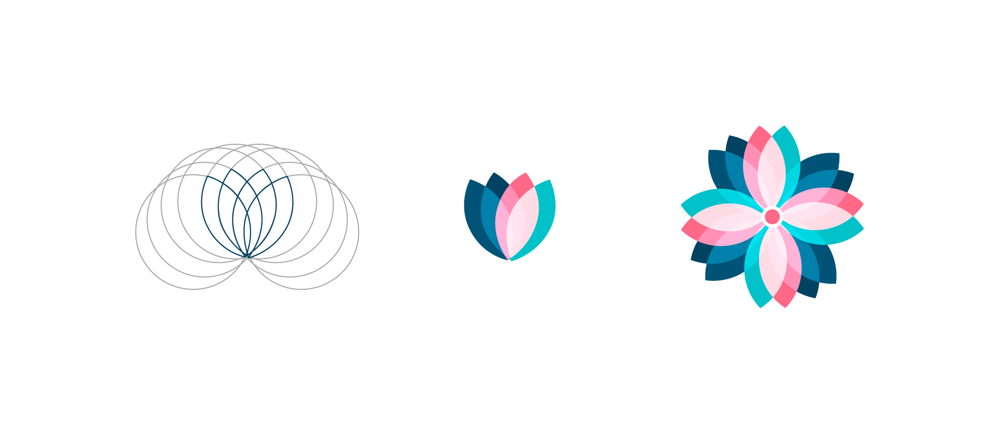
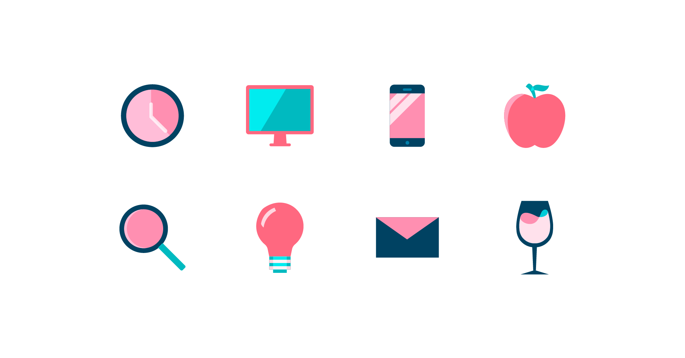
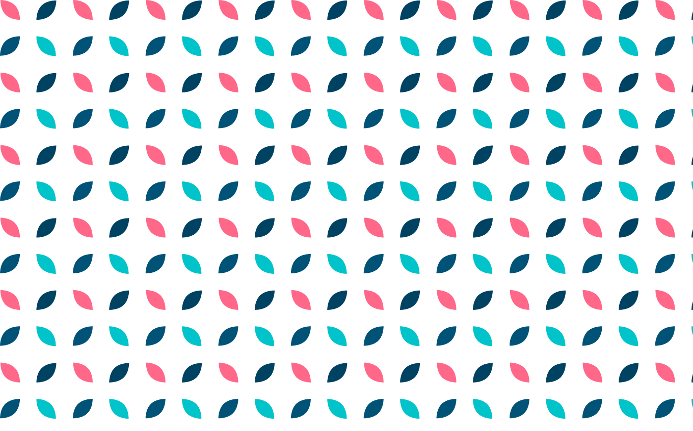
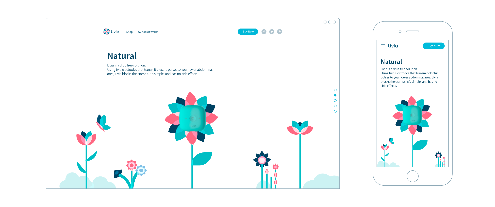
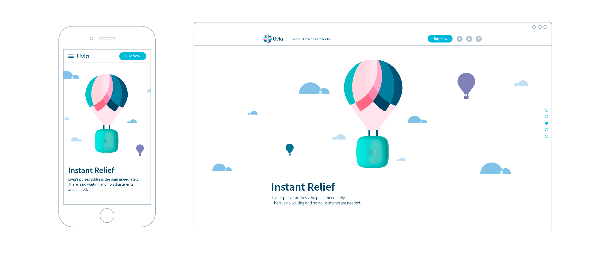

-
Livia
Branding a femtech health device
-
How do you brand a medical device for menstrual pain without making it feel clinical? Working with an existing logo mark, the challenge was to build a complete brand system that felt empowering and lifestyle-forward while maintaining the credibility needed for an FDA-cleared device.

-
Marketing illustration positioning the device as liberating and uplifting.

-
Brand identity development: typography, lockup, and system built around an existing logo mark.

-
Simplified mark for device engraving—line-based version for production.

-
Logo mark refinement process.

-
Soft teals and blues—modern and approachable, moving away from clinical or overly feminine pink.

-
Icon set maintaining the rounded, accessible aesthetic.

-
Brand pattern for collateral and business cards.


-
Web and mobile interface design.